All projects
Everything I built for the fun of it.
Nineteen live experiments, each on its own subpath of this domain — the three from the homepage first.
/jerlang/
An Erlang runtime for the JVM
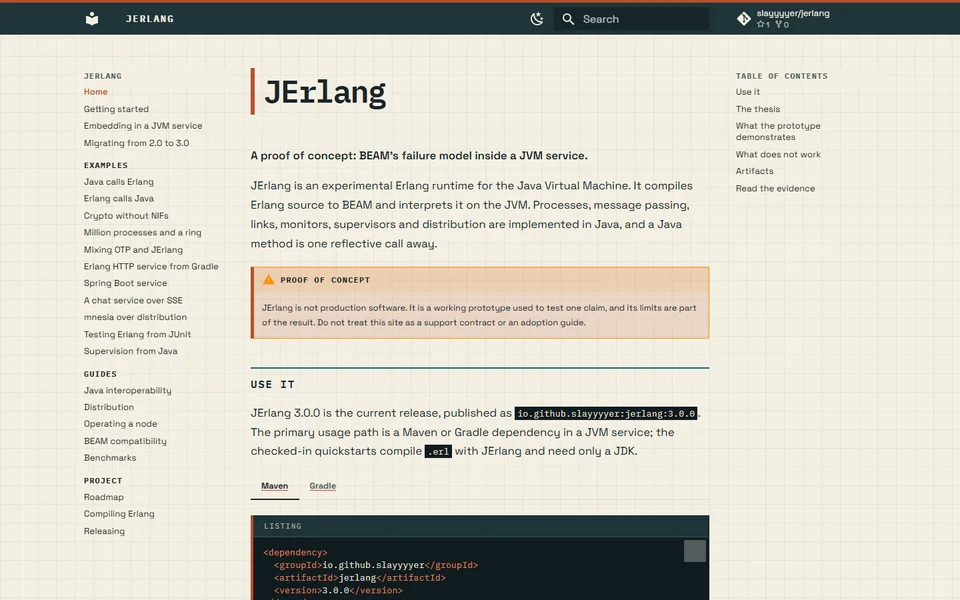
Compiles Erlang source to BEAM and interprets it on the JVM, so OTP’s own gen_server and supervisor run unmodified — a working prototype, not production software. Built solo: the compiler, interpreter, process model, distribution and Java interop; published on Maven Central.
- Java 21
- BEAM
- OTP 29
/orders-service/
A three-repo reference system
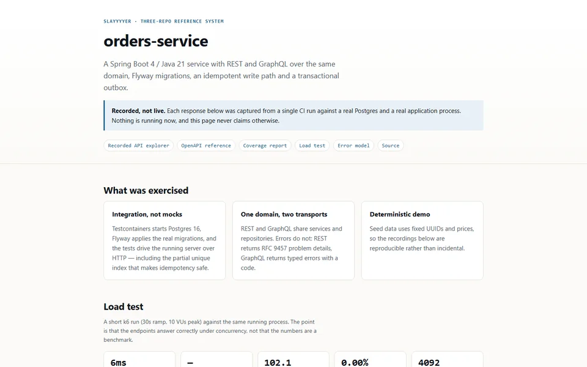
One orders domain, built solo across three repositories: an API with REST and GraphQL over Postgres 16, six zero-downtime migrations measured against a busy writer, and a GCP reference platform with Terraform verified against a mock provider, never applied. Recorded from one CI run, not a live demo.
- Spring Boot 4
- Postgres 16
- Terraform
/buffy/
A desk companion for your coding agent
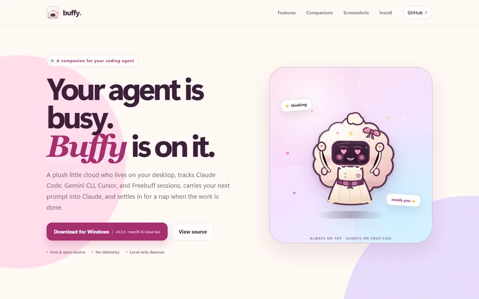
Shipped for Windows, macOS and Linux: agent activity becomes an always-on-top overlay. No telemetry. Built solo: the overlay, local daemon, CLI, hooks for Claude Code, Gemini CLI, Cursor and Freebuff, and the installers.
- Desktop app
- CLI
- Local daemon
/morphex/
Pluralize English nouns, deterministically
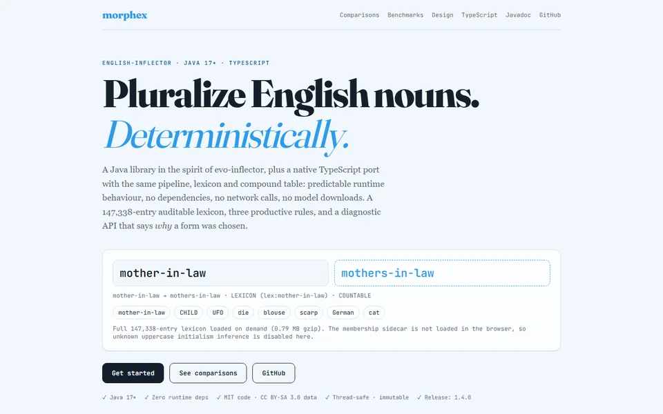
Exact on the frozen 36,241-word set where stock lands at 96.5%. Scope: a Java 17 library — a 147,338-entry auditable lexicon, three productive spelling rules and a first-match-wins precedence, with a diagnostic API that says why a form was chosen. No dependencies, network calls or model downloads; MIT code over CC BY-SA 3.0 data.
- Java 17
- 147k lexicon
- JMH
/transcend/
Transcend: English↔French from scratch
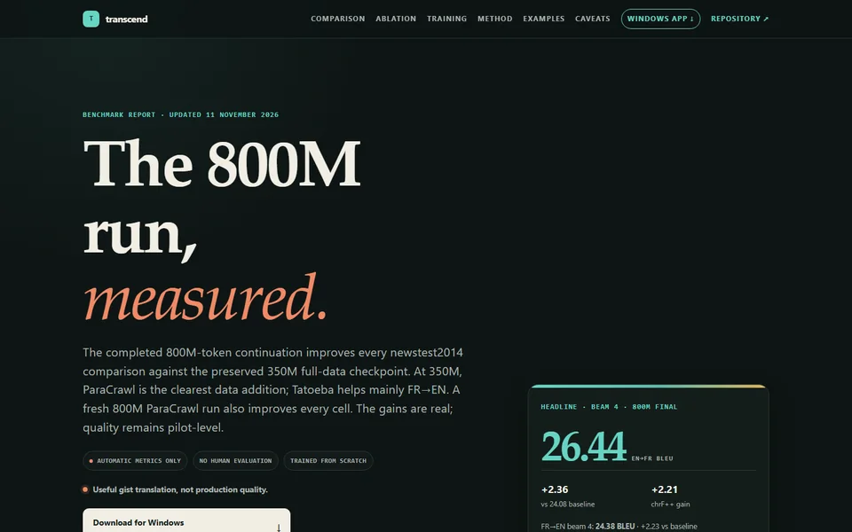
A pilot-level English↔French translator: the 800M-token run improves every newstest2014 comparison against the preserved 350M checkpoint, and the training method, ablation and caveats are published. Scope: the training runs, the benchmark report, and a Windows app that runs the model on-device with no Python and no network after install.
- 800M tokens
- Java runtime
- Windows app
/yahtzee/
Exact-probability Yahtzee
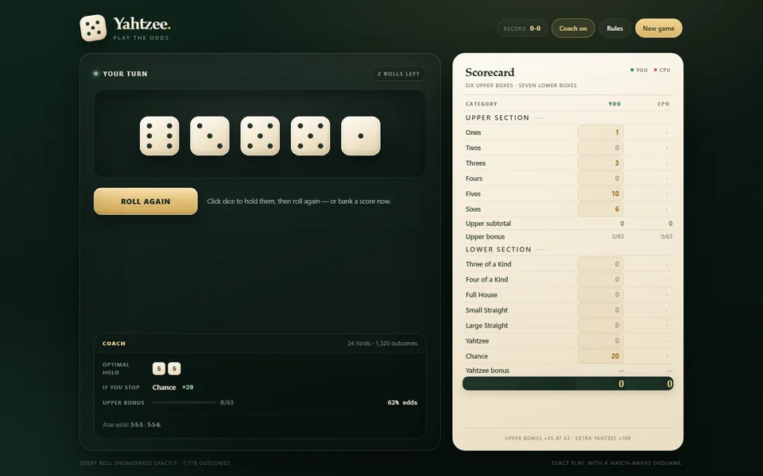
Play against a CPU that solves every roll with exact probabilities and keeps an exact table for the rest of the game, endgame included. Scope: the exact-value solver, the table and the opponent.
- Game
- Exact EV
/blackjack/
Blackjack Lab
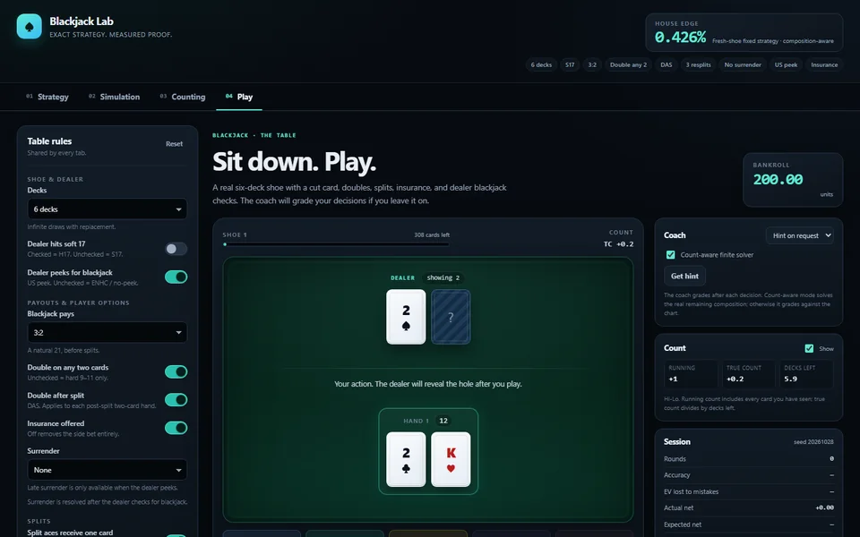
A strategy chart that re-derives itself whenever a rule changes, with card counting and a simulation target to prove the number. Scope: the exact solver and the lab around it.
- Solver
- Simulation
/word-chomp/
Word Chomp!
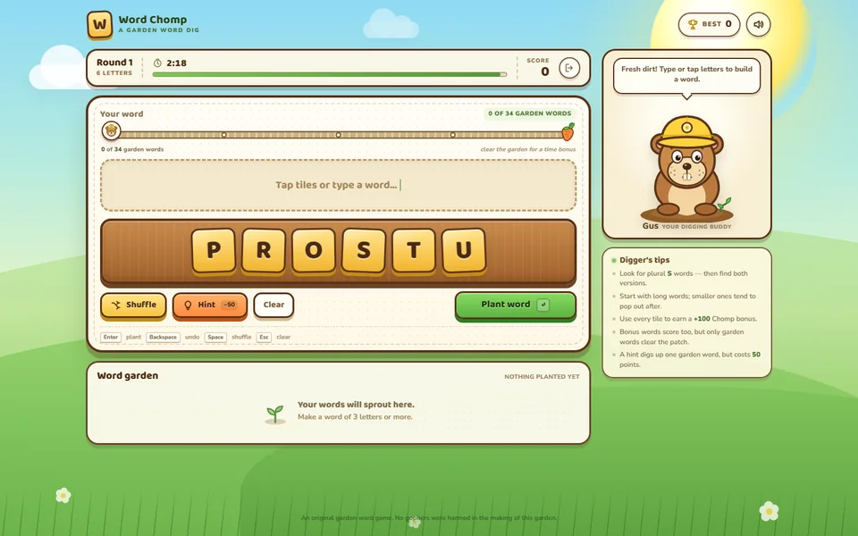
Unscramble a six- or seven-letter rack, find the three-to-seven-letter words and clear every garden word before the 2:20 timer runs out. Scope: the word lists, the scoring and the round timer.
- Word game
- 3–7 letters
- 2:20 rounds
/boggle/
Boggle Lab
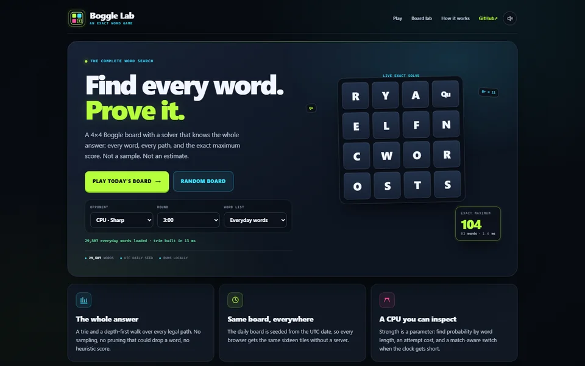
A 4×4 Boggle game backed by a solver that computes every word, every legal path and the board’s exact maximum score rather than sampling them — race a CPU whose risk changes near the clock, or hill-climb a high scorer in the board lab. Scope: vanilla HTML, CSS and JavaScript — no framework, no build step, no server.
- Game
- Exact solver
- Vanilla JS
/earth-radio/
Earth Radio: one day of the planet, in sound
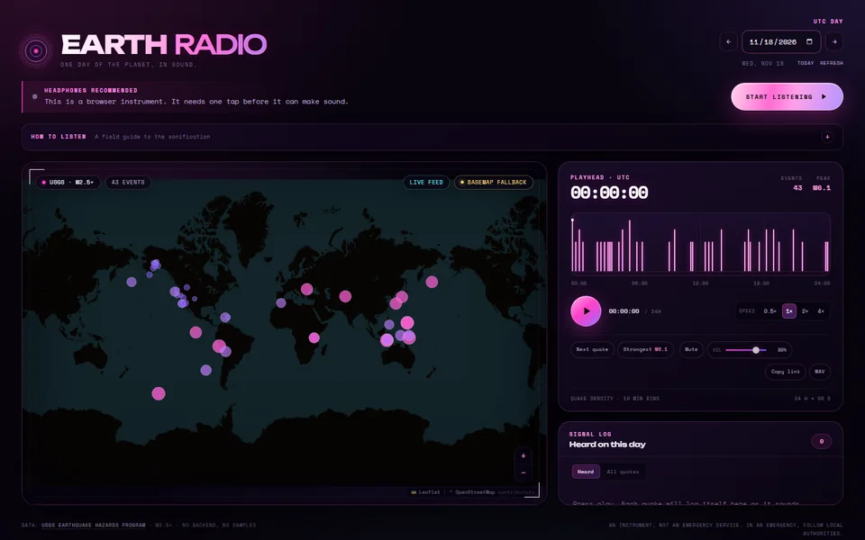
A single UTC day of real USGS earthquakes, magnitude 2.5 and up, becomes a 90-second ambient piece: longitude places it in the stereo field, depth sets the pitch in D minor pentatonic, and magnitude sets the loudness. Scope: a browser instrument — no samples, no backend.
- Browser instrument
- No samples
- USGS feed
/clt-almanac/
The Charlotte Almanac
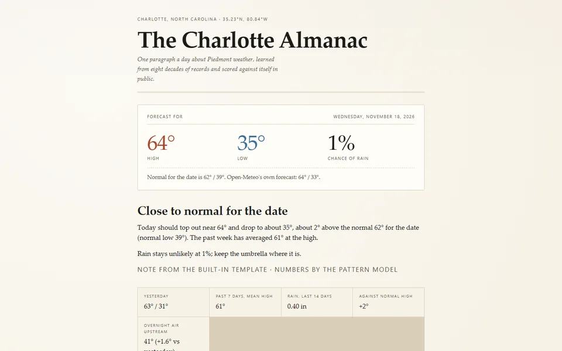
A daily weather note for Charlotte, retrained every morning on the station record back to 1939, with a backtest that only ever sees what was known that day. Scope: ridge and logistic regressions, the backtest, and a writer handed the finished numbers with orders not to invent any of them.
- Forecast model
- Backtest
- Charlotte
/murmur/
Murmur
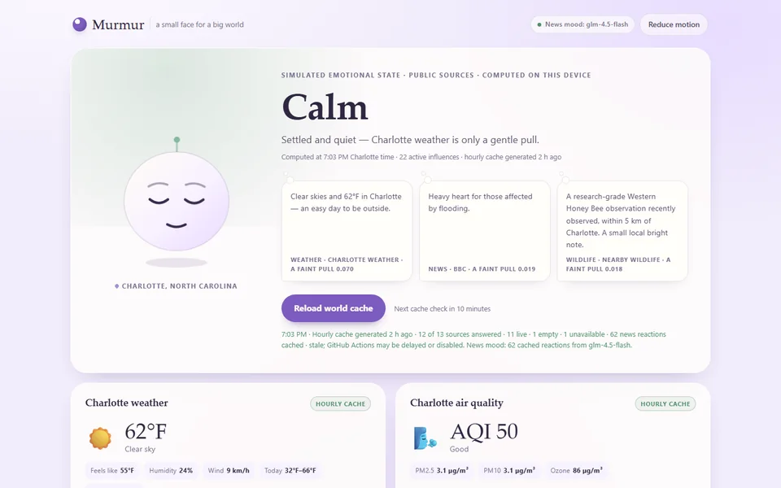
A small animated face in Charlotte that reacts to weather, air quality, alerts, river levels and earthquakes — a simulated mood, not a real one. Scope: the character and the live feeds behind it.
- Public sources
- Animated face
/what-changed/
What Changed Today
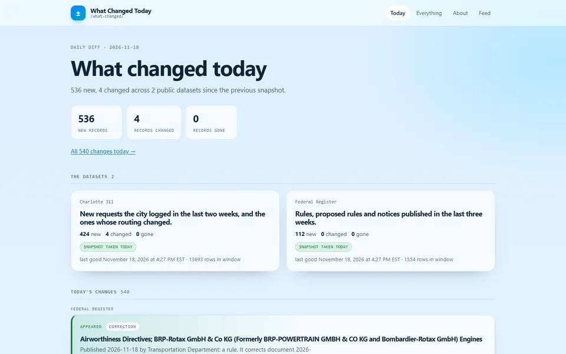
A daily field-level diff of Charlotte 311 service requests and the Federal Register that shows only what moved, labelling records new, backfilled or aged out — and publishes a failed fetch as no snapshot rather than a reassuring zero. Scope: GitHub Actions diffs and commits, Pages serves the result; no server, database or keys.
- Daily diff
- Charlotte 311
- Federal Register
/mx-lab/
MX Lab: seven seasons, measured
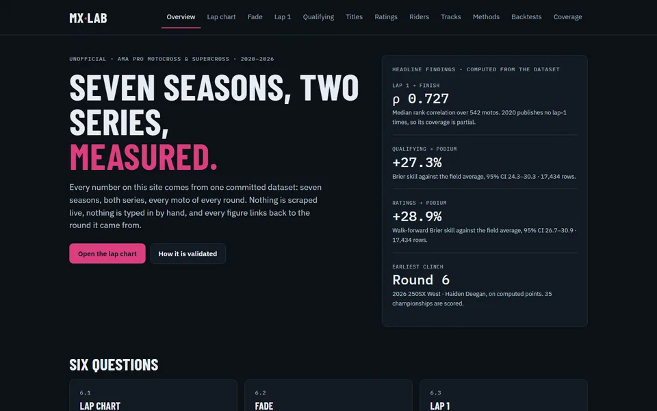
Seven seasons of AMA Pro Motocross and Supercross, every moto of every round, with six analyses published on top: lap chart, fade, lap one, qualifying, titles and an Elo rating per class. Scope: the committed dataset and its build — byte-identical rebuilds, a gate that fails the build on parser errors, and warnings that name the sheet. Unofficial, derived statistics only; no source PDFs stored or served.
- Dataset
- Seven seasons
- Elo ratings
/motobuzz/
MotoBuzz
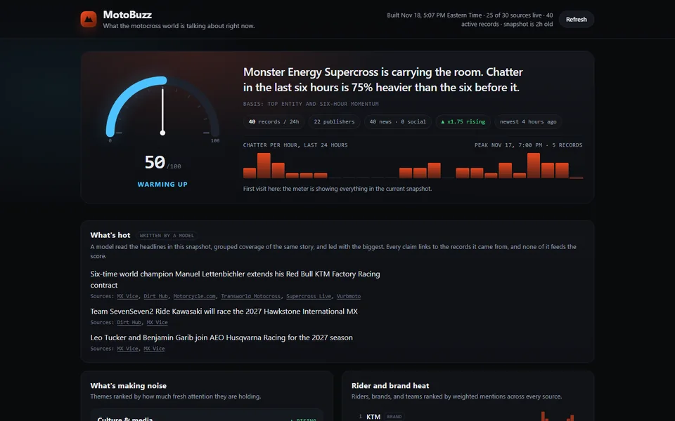
Ranks what the motocross world is talking about from public news and social sources, refreshed once an hour. Scope: the hourly collection and the ranking.
- Ranking
- Hourly
/saf-explorer/
SAF Explorer
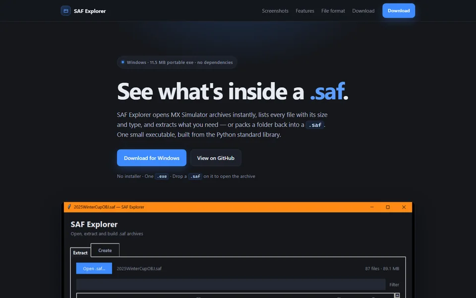
Lists and extracts what is inside an MX Simulator .saf archive, or packs a folder back into one, with extraction that cannot escape the target folder and builds that write a temporary file before replacing the archive. Scope: pure Python standard library, shipped as an 11.5 MB standalone exe.
- Python
- .saf format
- Standalone exe
/tadc/
The Amazing Digital Circus: a fan-made break room
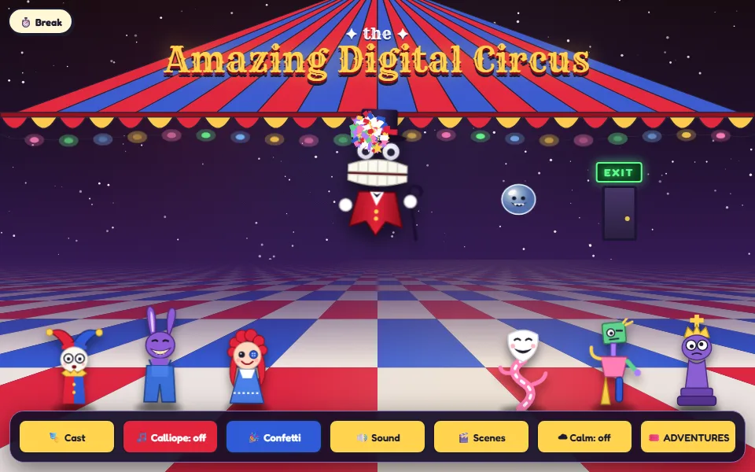
Thirty-three small games, puzzles and toys behind a working big top: a calliope, confetti, a passport that stamps each act, and a backstage lounge where the cast answers from a character GRU trained in pure Node. Scope: static HTML, CSS and JavaScript with no build step or backend — chat and the model run in the browser, Quiet and Calm modes are everywhere, and the fan project is unofficial and non-commercial.
- Vanilla JS
- 33 acts
- Tiny GRU
/j/
Think in arrays: a J interpreter in TypeScript
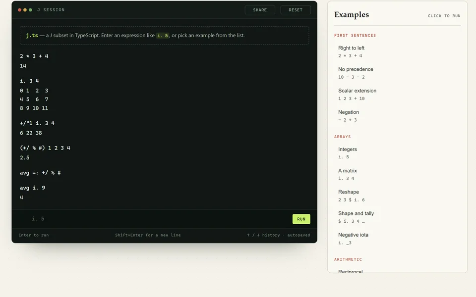
A practical subset of J — no operator precedence, every value an array — evaluated by an interpreter written from scratch in TypeScript and run entirely in the browser. Scope: the array model with exact rationals and complex numbers, rank, adverbs, trains, explicit definitions, sparse storage and J’s display format, behind a REPL that survives a reload and a ten-part guide whose examples all run. Ported from the Java interpreter in the same repository; no runtime dependencies, and Vite only builds the page.
- TypeScript
- J subset
- No runtime deps
/why-lang/
Drop a file, hit its URL, it runs
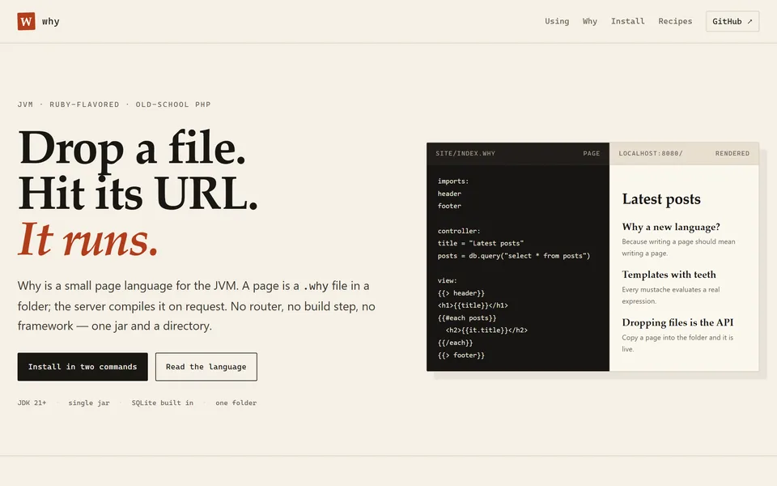
A small page language for the JVM: a page is a .why file in a folder, and the server compiles it on request — no router, no build step, no framework, one jar and a directory. Scope: imports, controller and view sections in a single file; mustaches that evaluate real Ruby-flavoured expressions, escaped by default; SQLite with bound parameters; file:line errors with a caret and did-you-mean hints; and why check, which compiles every page and prints a page map before you serve it. A proof of concept, deliberately small.
- Java 21 · JVM
- Single jar
- SQLite built in